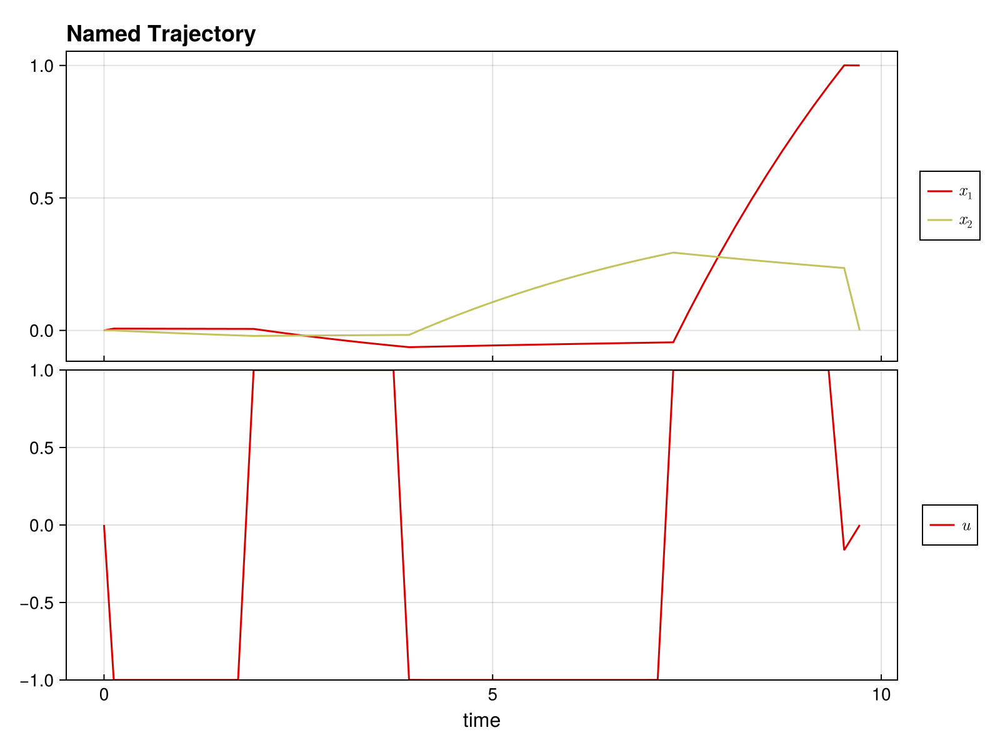

Quickstart Guide
Welcome to DirectTrajOpt.jl! This guide will get you up and running in minutes.
What is DirectTrajOpt?
DirectTrajOpt.jl solves trajectory optimization problems - finding optimal control sequences that drive a dynamical system from an initial state to a goal state while minimizing a cost function.
Installation
First, install the package:
using Pkg
Pkg.add("DirectTrajOpt")You'll also need NamedTrajectories.jl for defining trajectories:
using DirectTrajOpt
using NamedTrajectories
using LinearAlgebra
using CairoMakieA Minimal Example
Let's solve a simple problem: drive a 2D system from [0, 0] to [1, 0] with minimal control effort.
Step 1: Define the Trajectory
A trajectory contains your states, controls, and time information:
N = 50 # number of time steps
traj = NamedTrajectory(
(
x = randn(2, N), # 2D state
u = randn(1, N), # 1D control
Δt = fill(0.1, N), # time step
);
timestep = :Δt,
controls = :u,
initial = (x = [0.0, 0.0],),
final = (x = [1.0, 0.0],),
bounds = (Δt = (0.05, 0.2), u = 1.0),
)N = 50, (x = 1:2, u = 3:3, → Δt = 4:4)Step 2: Define the Dynamics
Specify how your system evolves. For bilinear dynamics ẋ = (G₀ + u₁G₁) x:
G_drift = [-0.1 1.0; -1.0 -0.1] # drift term
G_drives = [[0.0 1.0; 1.0 0.0]] # control term
G = u -> G_drift + sum(u .* G_drives)
integrator = BilinearIntegrator(G, :x, :u, traj)BilinearIntegrator: :x = exp(Δt G(:u)) :x (dim = 2)Step 3: Define the Objective
What do we want to minimize? Let's penalize control effort:
obj = QuadraticRegularizer(:u, traj, 1.0)QuadraticRegularizer on :u (R = [1.0], all)Step 4: Create and Solve
Combine everything into a problem and solve:
prob = DirectTrajOptProblem(traj, obj, integrator)DirectTrajOptProblem
Trajectory
Timesteps: 50
Duration: 4.9
Knot dim: 4
Variables: x (2), u (1), Δt (1)
Controls: u, Δt
Objective: QuadraticRegularizer on :u (R = [1.0], all)
Dynamics (1 integrators)
BilinearIntegrator: :x = exp(Δt G(:u)) :x (dim = 2)
Constraints (4 total: 2 equality, 2 bounds)
EqualityConstraint: "initial value of x"
EqualityConstraint: "final value of x"
BoundsConstraint: "bounds on Δt"
BoundsConstraint: "bounds on u"The problem summary shows the trajectory, objective, dynamics, and constraints:
probDirectTrajOptProblem
Trajectory
Timesteps: 50
Duration: 4.9
Knot dim: 4
Variables: x (2), u (1), Δt (1)
Controls: u, Δt
Objective: QuadraticRegularizer on :u (R = [1.0], all)
Dynamics (1 integrators)
BilinearIntegrator: :x = exp(Δt G(:u)) :x (dim = 2)
Constraints (4 total: 2 equality, 2 bounds)
EqualityConstraint: "initial value of x"
EqualityConstraint: "final value of x"
BoundsConstraint: "bounds on Δt"
BoundsConstraint: "bounds on u"solve!(prob; max_iter = 100, verbose = false)This is Ipopt version 3.14.19, running with linear solver MUMPS 5.8.2.
Number of nonzeros in equality constraint Jacobian...: 776
Number of nonzeros in inequality constraint Jacobian.: 0
Number of nonzeros in Lagrangian Hessian.............: 1254
Total number of variables............................: 196
variables with only lower bounds: 0
variables with lower and upper bounds: 100
variables with only upper bounds: 0
Total number of equality constraints.................: 98
Total number of inequality constraints...............: 0
inequality constraints with only lower bounds: 0
inequality constraints with lower and upper bounds: 0
inequality constraints with only upper bounds: 0
iter objective inf_pr inf_du lg(mu) ||d|| lg(rg) alpha_du alpha_pr ls
0 1.3010328e-01 3.97e+00 2.09e-08 0.0 0.00e+00 - 0.00e+00 0.00e+00 0
1 1.6982704e-01 1.78e-01 1.16e+00 -1.3 3.44e+00 - 9.75e-01 1.00e+00h 1
2 1.6270697e-01 1.05e-01 8.76e-01 -1.5 2.69e+00 - 4.12e-01 7.11e-01f 1
3 2.0812008e-01 6.13e-02 6.31e-01 -2.3 3.94e+00 - 3.16e-01 4.13e-01h 1
4 2.6576401e-01 4.29e-02 3.52e-01 -2.7 2.91e+00 - 4.43e-01 3.00e-01h 1
5 2.9009873e-01 3.66e-02 6.29e-01 -1.4 5.08e+00 - 6.49e-01 1.46e-01f 1
6 3.9916364e-01 2.52e-02 2.62e+00 -1.5 2.95e+00 - 8.80e-01 3.05e-01h 1
7 5.2739359e-01 2.08e-02 1.06e+01 -1.7 2.81e+00 - 2.43e-01 1.75e-01h 1
8 5.6850936e-01 2.01e-02 2.00e+01 -0.9 7.15e+00 - 1.00e+00 3.37e-02h 1
9 7.5000072e-01 1.73e-02 2.79e+02 -0.3 4.04e+00 - 1.00e+00 1.38e-01h 1
iter objective inf_pr inf_du lg(mu) ||d|| lg(rg) alpha_du alpha_pr ls
10 8.2511457e-01 1.67e-02 3.73e+03 0.9 1.03e+01 - 1.00e+00 3.26e-02h 1
11 8.8287856e-01 1.60e-02 5.40e+04 1.4 1.04e+01 - 2.42e-01 4.30e-02h 1
12 9.0209959e-01 1.58e-02 4.48e+05 1.7 1.23e+02 - 1.00e+00 1.40e-02h 1
13 9.0993683e-01 1.56e-02 4.12e+05 -3.9 7.14e+00 - 2.40e-03 1.11e-02h 1
14 8.9944613e-01 1.55e-02 1.83e+07 2.7 1.15e+02 - 6.78e-03 8.97e-03h 1
15 9.0229277e-01 1.54e-02 3.95e+06 2.7 2.37e+02 - 4.32e-03 1.93e-03h 1
16 9.0135488e-01 1.54e-02 2.66e+07 2.7 7.91e+02 - 1.22e-03 1.12e-04h 1
17 9.0571763e-01 1.54e-02 3.31e+08 2.7 5.60e+03 - 2.52e-04 5.08e-05h 1
18 9.1958114e-01 1.54e-02 1.30e+10 1.3 6.79e+02 - 8.01e-04 2.23e-03h 1
19 9.1940378e-01 1.52e-02 3.39e+10 0.6 1.71e+02 - 1.00e+00 1.15e-02h 1
iter objective inf_pr inf_du lg(mu) ||d|| lg(rg) alpha_du alpha_pr ls
20 9.1941975e-01 1.70e-02 1.72e+10 2.7 1.72e-02 12.0 9.98e-01 1.00e+00f 1
21 9.1946588e-01 1.70e-02 7.84e+11 2.3 4.01e+00 11.5 3.83e-01 2.90e-04h 1
22 9.2018363e-01 1.69e-02 6.81e+11 1.6 4.01e+00 11.0 1.00e+00 4.51e-03h 1
23 9.2019087e-01 1.69e-02 8.31e+12 1.6 4.03e+00 10.6 5.73e-01 4.48e-05h 1
24r 9.2019087e-01 1.69e-02 1.00e+03 1.6 0.00e+00 10.1 0.00e+00 2.58e-07R 6
25r 9.0280423e-01 1.17e-02 1.63e+01 0.3 1.13e-01 - 9.85e-01 8.20e-01f 1
26 9.0938450e-01 1.15e-02 3.67e+00 -4.0 2.22e-01 - 9.54e-02 2.06e-02h 1
27 8.6761568e-01 1.12e-02 1.22e+01 -0.8 7.83e+00 - 4.52e-01 1.87e-02f 1
28 8.6616166e-01 7.96e-03 7.93e+02 -1.2 6.77e+00 - 1.55e-02 2.92e-01h 1
29 8.8069900e-01 7.55e-03 7.55e+02 -4.0 1.31e+00 - 1.47e-01 5.08e-02h 1
iter objective inf_pr inf_du lg(mu) ||d|| lg(rg) alpha_du alpha_pr ls
30 8.7959977e-01 7.16e-03 7.14e+02 -0.7 3.68e+01 - 6.29e-02 5.23e-02f 1
31 8.6576621e-01 7.13e-03 6.16e+03 1.0 2.67e+01 - 9.45e-01 3.97e-03f 1
32 9.1328556e-01 6.44e-03 2.82e+04 -1.2 4.03e+00 - 2.69e-01 9.57e-02h 1
33 9.3066493e-01 6.30e-03 5.30e+05 1.6 9.80e+00 - 1.00e+00 2.09e-02h 1
34 9.3880312e-01 6.21e-03 3.08e+07 2.4 2.16e+00 - 1.00e+00 1.52e-02h 1
35 9.4037730e-01 6.19e-03 9.24e+09 2.7 6.36e-01 - 1.00e+00 3.24e-03h 1
36 9.4044211e-01 6.16e-03 1.65e+12 2.7 2.01e-02 - 1.00e+00 5.48e-03h 1
37 9.4046570e-01 4.36e-03 4.39e+12 2.7 1.50e-02 - 1.00e+00 2.92e-01h 1
38 9.4047309e-01 4.36e-03 3.59e+10 1.4 3.86e-02 11.4 1.00e+00 3.12e-02h 6
39r 9.4047309e-01 4.36e-03 9.87e+02 2.7 0.00e+00 - 0.00e+00 3.64e-07R 6
iter objective inf_pr inf_du lg(mu) ||d|| lg(rg) alpha_du alpha_pr ls
40r 9.1610907e-01 4.04e-03 8.98e+00 0.3 5.40e-01 - 9.91e-01 9.90e-01f 1
41r 9.1650614e-01 1.29e-03 4.28e+00 -4.0 3.26e-02 - 9.63e-01 9.12e-01f 1
42 9.2871766e-01 1.26e-03 2.23e+01 -4.0 2.86e-01 - 6.53e-01 2.82e-02h 1
43 9.3379134e-01 1.24e-03 2.13e+01 -4.0 3.05e+00 - 7.25e-04 1.45e-02h 1
44 9.3168378e-01 1.20e-03 8.75e+02 -1.8 1.61e+02 - 9.16e-03 1.20e-02f 1
45 9.3268520e-01 1.20e-03 8.74e+02 -4.0 5.00e+00 - 2.79e-02 1.02e-03h 1
46 9.3911238e-01 1.19e-03 1.11e+03 -1.5 1.53e+00 - 1.00e+00 1.25e-02h 1
47 9.4047103e-01 1.19e-03 5.03e+05 -0.8 9.42e-01 - 1.00e+00 2.18e-03h 1
48 9.4051113e-01 1.16e-03 2.17e+07 -1.3 1.31e-02 - 1.00e+00 2.24e-02h 1
49 9.4051118e-01 1.15e-03 1.03e+09 -1.1 1.72e-02 - 1.00e+00 4.96e-03h 3
iter objective inf_pr inf_du lg(mu) ||d|| lg(rg) alpha_du alpha_pr ls
50 9.4051154e-01 5.98e-03 1.05e+09 -1.2 1.28e-02 - 3.60e-01 3.60e-01s 21
51 9.4051153e-01 5.96e-03 1.05e+09 -0.5 4.12e-02 - 3.57e-04 3.57e-04s 11
52 9.4051153e-01 5.95e-03 7.69e+04 -0.5 8.48e-06 10.9 1.00e+00 0.00e+00S 11
53 9.4051154e-01 5.88e-03 1.09e+06 -1.2 3.73e-05 10.5 1.00e+00 1.00e+00h 1
54r 9.4051154e-01 5.88e-03 1.00e+03 -1.9 0.00e+00 - 0.00e+00 3.32e-07R 12
55r 9.4042509e-01 1.92e-03 6.87e+02 0.2 1.28e+00 - 9.91e-01 4.54e-03f 1
56 9.4046675e-01 1.92e-03 8.64e+03 -1.9 3.35e-01 - 6.94e-01 9.23e-05h 1
57 9.4050485e-01 1.89e-03 5.91e+05 -1.9 3.29e-03 - 1.00e+00 1.44e-02h 1
58 9.4050588e-01 2.49e-03 5.60e+06 -1.9 1.21e-02 - 1.00e+00 5.48e-02h 2
59 9.4052786e-01 1.26e-03 1.75e+05 -1.9 5.75e-03 - 9.69e-01 1.00e+00f 1
iter objective inf_pr inf_du lg(mu) ||d|| lg(rg) alpha_du alpha_pr ls
60 9.4052794e-01 1.26e-03 1.22e+05 -4.0 2.52e-05 - 3.03e-01 3.03e-01s 22
61 9.4047548e-01 1.26e-03 1.21e+05 -2.3 1.31e-03 - 2.83e-03 1.00e+00f 1
62 9.3973533e-01 1.23e-03 9.83e+07 -0.1 2.47e+02 - 5.69e-06 8.01e-03f 1
63 9.4051882e-01 1.23e-03 9.83e+07 -4.0 5.99e+01 - 4.20e-03 3.30e-04h 1
64r 9.4051882e-01 1.23e-03 1.00e+03 -1.8 0.00e+00 - 0.00e+00 4.16e-07R 4
65r 9.2005088e-01 9.78e-04 3.70e+02 -0.2 1.01e+01 - 9.90e-01 9.13e-02f 1
66 9.2034053e-01 9.78e-04 4.47e+02 -1.8 2.25e+00 - 2.41e-01 6.22e-04h 1
67 9.2882946e-01 1.02e-03 1.94e+04 -1.8 2.21e+02 - 4.80e-05 3.57e-03h 1
68 9.3199796e-01 1.02e-03 1.95e+04 -1.8 7.12e+02 - 8.13e-04 5.84e-05h 1
69r 9.3199796e-01 1.02e-03 9.99e+02 -1.8 0.00e+00 - 0.00e+00 3.42e-07R 3
iter objective inf_pr inf_du lg(mu) ||d|| lg(rg) alpha_du alpha_pr ls
70r 9.1332681e-01 1.02e-03 5.98e+02 -0.2 2.43e+02 - 9.92e-01 6.10e-04f 1
71r 6.3791741e-01 2.07e-03 1.94e+03 -0.7 3.01e-01 - 1.70e-01 1.00e+00f 1
72r 6.3911250e-01 7.66e-03 1.40e+03 -0.7 1.50e-01 2.0 3.57e-01 2.86e-01f 1
73r 6.0994216e-01 9.23e-03 6.70e+02 -0.7 4.69e-01 - 6.12e-01 5.18e-01f 1
74r 5.9286606e-01 1.35e-02 3.93e+02 -0.7 1.06e-01 1.5 1.00e+00 4.57e-01f 1
75r 5.6216759e-01 1.35e-02 2.76e+01 -0.7 1.01e+00 - 7.40e-01 1.00e+00f 1
76r 5.5047613e-01 1.25e-02 1.16e+01 -0.7 5.10e-01 - 1.00e+00 1.00e+00f 1
77r 5.5289990e-01 1.44e-02 1.32e+01 -0.7 7.16e-01 - 1.00e+00 1.00e+00F 1
78r 5.4843540e-01 1.34e-02 4.16e+00 -0.7 2.71e-01 - 1.00e+00 1.00e+00h 1
79r 6.6401121e-01 1.23e-02 1.31e+01 -1.4 9.89e-01 - 5.38e-01 7.99e-01f 1
iter objective inf_pr inf_du lg(mu) ||d|| lg(rg) alpha_du alpha_pr ls
80r 7.3504620e-01 1.02e-02 9.93e+00 -1.5 3.17e-01 - 1.00e+00 7.66e-01f 1
81r 8.5811278e-01 7.79e-03 4.63e-01 -2.0 2.69e-01 - 1.00e+00 1.00e+00f 1
82r 9.2282031e-01 7.07e-03 1.13e-01 -2.9 5.47e-02 - 1.00e+00 9.95e-01f 1
83r 9.3941619e-01 6.90e-03 4.68e-02 -4.0 1.96e-02 - 1.00e+00 1.00e+00f 1
84r 9.3986796e-01 6.90e-03 2.88e-06 -4.0 3.06e-04 - 1.00e+00 1.00e+00h 1
Number of Iterations....: 84
(scaled) (unscaled)
Objective...............: 9.3986814105060074e-09 9.3986814105060068e-01
Dual infeasibility......: 1.7578356036380402e-02 1.7578356036380401e+06
Constraint violation....: 6.8977941944763956e-03 6.8977941944763956e-03
Variable bound violation: 0.0000000000000000e+00 0.0000000000000000e+00
Complementarity.........: 1.0000000002842125e-04 1.0000000002842125e+04
Overall NLP error.......: 1.7578356036380402e-02 1.7578356036380401e+06
Number of objective function evaluations = 184
Number of objective gradient evaluations = 70
Number of equality constraint evaluations = 184
Number of inequality constraint evaluations = 0
Number of equality constraint Jacobian evaluations = 91
Number of inequality constraint Jacobian evaluations = 0
Number of Lagrangian Hessian evaluations = 85
Total seconds in IPOPT = 6.982
EXIT: Converged to a point of local infeasibility. Problem may be infeasible.Step 5: Access the Solution
Let's look at the results.
plot(prob.trajectory)
The optimized trajectory is stored in prob.trajectory:
println("Final state: ", prob.trajectory.x[:, end])
println("Control norm: ", norm(prob.trajectory.u))Final state: [1.0, 0.0]
Control norm: 6.856732016010664What You Can Do
- Multiple objectives: Combine regularization, minimum time, terminal costs
- Flexible dynamics: Linear, bilinear, time-dependent systems
- Add constraints: Bounds, path constraints, custom nonlinear constraints
- Smooth controls: Penalize derivatives for smooth, implementable controls
- Free time: Optimize trajectory duration
This page was generated using Literate.jl.